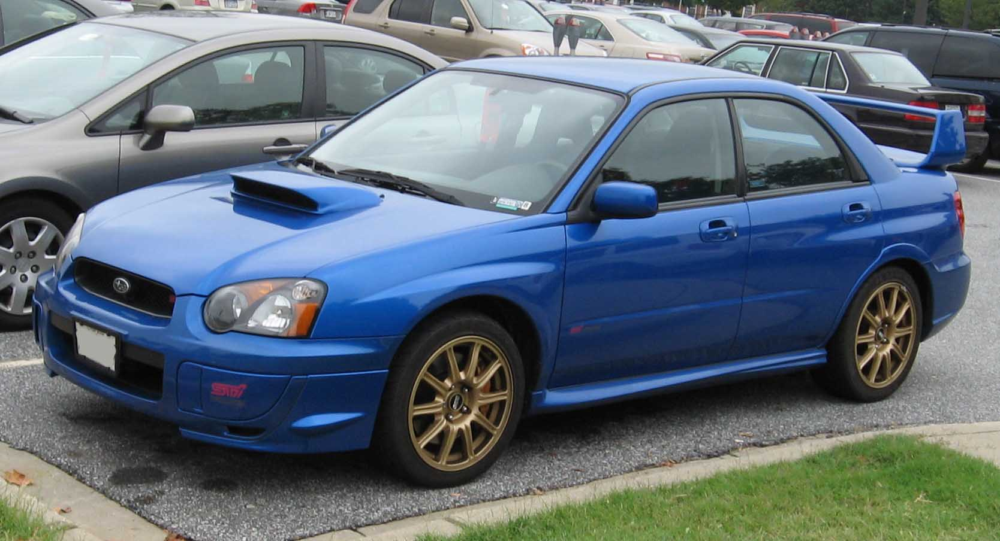
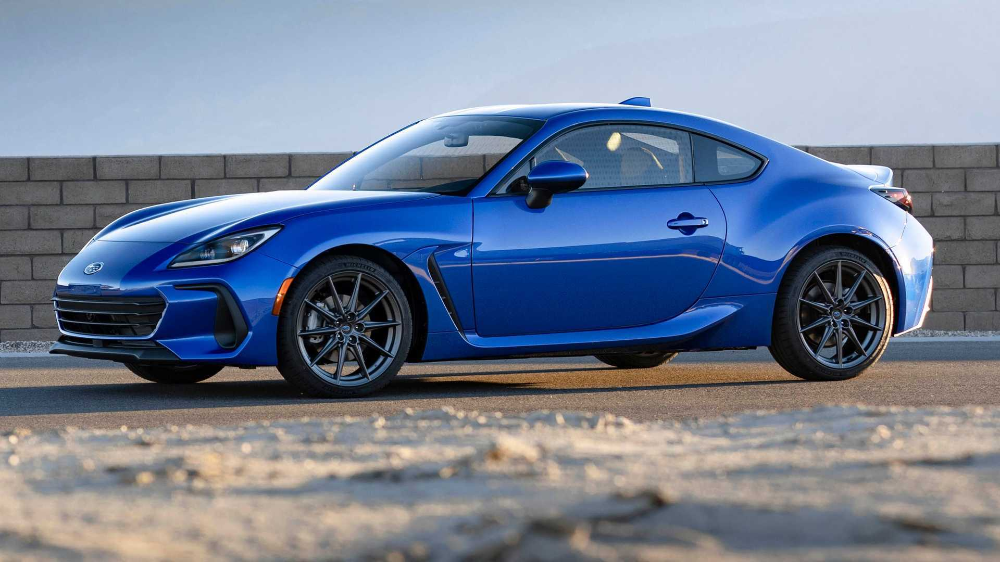

Subaru
WRX STI and BRZ
Subaru WRX STI

WRX STI Characteristics
- Model: WRX STI
- Body type: 4-door sedan
- Drive: All-wheel drive
- Transmission: 6-speed manual
- Focus: Rally-bred traction and turbo performance
About WRX STI
Subaru WRX STI is famous for its rally heritage, boxer engine, and confident handling in all weather conditions.
Subaru BRZ

BRZ Characteristics
- Model: BRZ
- Body type: 2-door coupe
- Drive: Rear-wheel drive
- Transmission: Manual / Automatic
- Focus: Lightweight chassis and driver engagement
About BRZ
Subaru BRZ is a compact sports coupe built for balanced cornering, predictable handling, and pure driving feel.